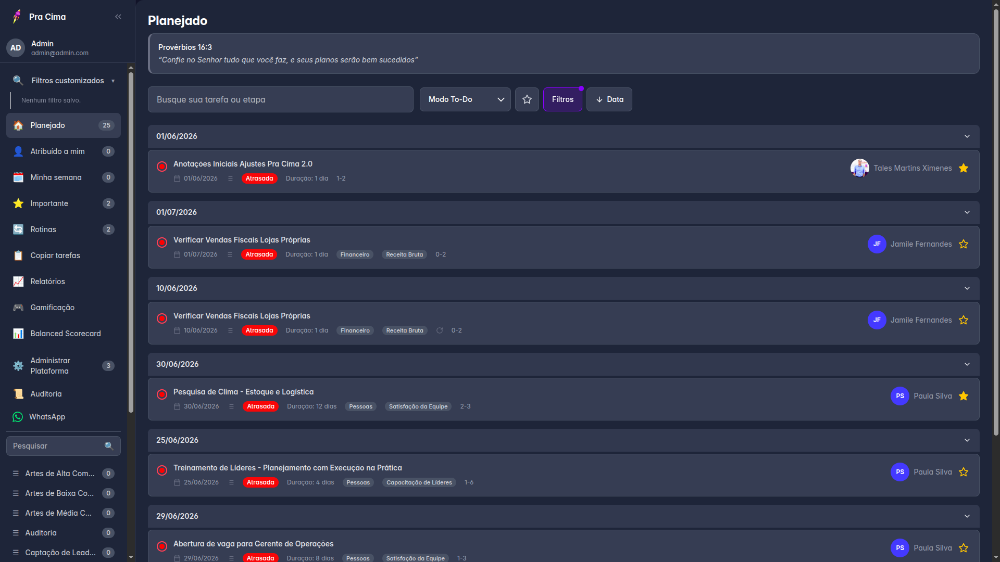
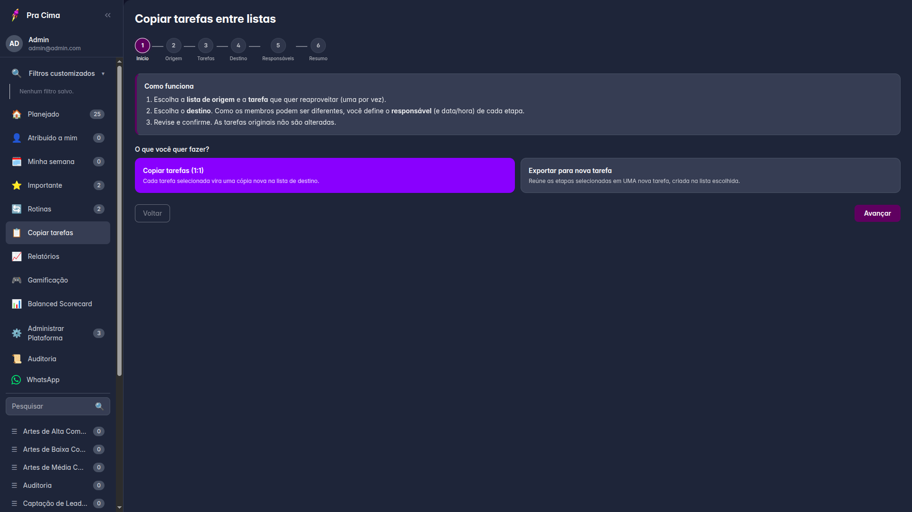
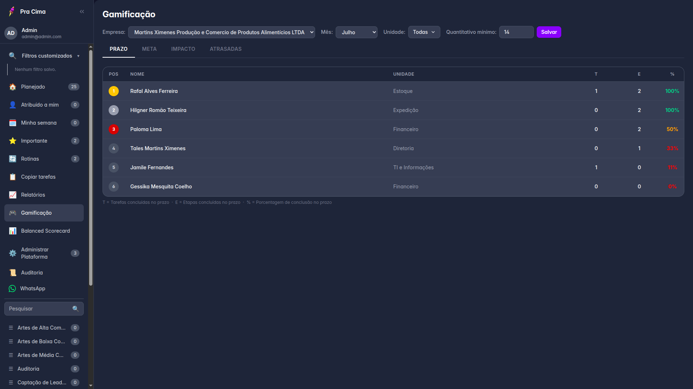

O Pra Cima é a plataforma que une o dia a dia da sua equipe — tarefas, etapas, prazos e rotinas — com a gestão estratégica de indicadores (Balanced Scorecard), gamificação e comunicação inteligente via WhatsApp. Tudo em um só lugar, para que sua empresa saiba exatamente o que está sendo feito e se isso está levando aos resultados certos.
Um sistema pensado para times que precisam de mais do que um quadro de tarefas: clareza sobre o que fazer, disciplina para cumprir prazos e visibilidade se o trabalho do dia a dia caminha para as metas estratégicas do negócio.

A tela Planejado reúne tudo o que sua equipe precisa fazer, organizado por data, com responsáveis, prazos, etapas e indicadores de atraso em destaque. Filtros como Atribuído a Mim, Minha Semana, Importantes e Rotinas deixam a rotina de cada colaborador na palma da mão.

Precisa reaplicar uma tarefa em outra lista ou unidade? O assistente de cópia leva o gestor passo a passo — origem, tarefa, destino e responsáveis — permitindo copiar 1:1 ou exportar etapas selecionadas para uma nova tarefa, sem alterar as tarefas originais.

Rankings por Prazo, Meta, Impacto e Atrasadas transformam o cumprimento de tarefas em reconhecimento individual e de equipe — filtrados por empresa, unidade e período, com quantitativo mínimo configurável para manter a régua justa.
As 4 perspectivas clássicas do BSC — Financeira, Operações, Mercado e Clientes, e Pessoas — organizam os indicadores estratégicos da empresa. Cada indicador acompanha meta, resultado e percentual de atingimento mês a mês, e pode ser vinculado diretamente às tarefas do time.
Consolide dados operacionais e estratégicos em relatórios gerenciais: tarefas realizadas por período, desempenho individual, listas de atividades e distribuição por dimensão do BSC — tudo filtrável por empresa e usuário, com exportação para Excel.
Detalhes técnicos que sustentam uma experiência estável e profissional, sem depender de infraestrutura própria complexa.
Processamento assíncrono multi-instância, com novas tentativas automáticas em caso de falha — entrega confiável de notificações.
Lembretes de prazos direto no WhatsApp da equipe, com horário comercial configurável e salvaguardas que nunca disparam em dev/teste.
Tarefas do dia a dia vinculadas a indicadores de Balanced Scorecard — do tático ao resultado, em um único fluxo.
Segmentação de listas, tarefas e usuários por organização, com controle de permissões por perfil e trilha de auditoria completa.
Cada tela tem uma versão dedicada para desktop e mobile — não é só responsividade via CSS — com três temas e acessibilidade WCAG AA.
Backend, banco, storage e frontend hospedados inteiramente no Railway, sem necessidade de infraestrutura própria complexa.
Especialmente indicado para redes e franquias com múltiplas unidades, mas serve qualquer empresa que queira unir execução operacional e gestão estratégica em uma única ferramenta.
Montam listas e quadros de trabalho, definem indicadores estratégicos de BSC, acompanham relatórios de produtividade e desempenho, e têm visibilidade completa sobre o andamento do trabalho da equipe — inclusive em operações com mais de uma empresa ou unidade.
Recebem tarefas, etapas e prazos claros, executam o trabalho do dia a dia com filtros pensados para a sua rotina (Atribuído a Mim, Minha Semana, Rotinas) e são reconhecidos pelo desempenho por meio da gamificação.
Experimente o Pra Cima e veja tarefas, rotinas, metas e desempenho integrados em um só lugar.